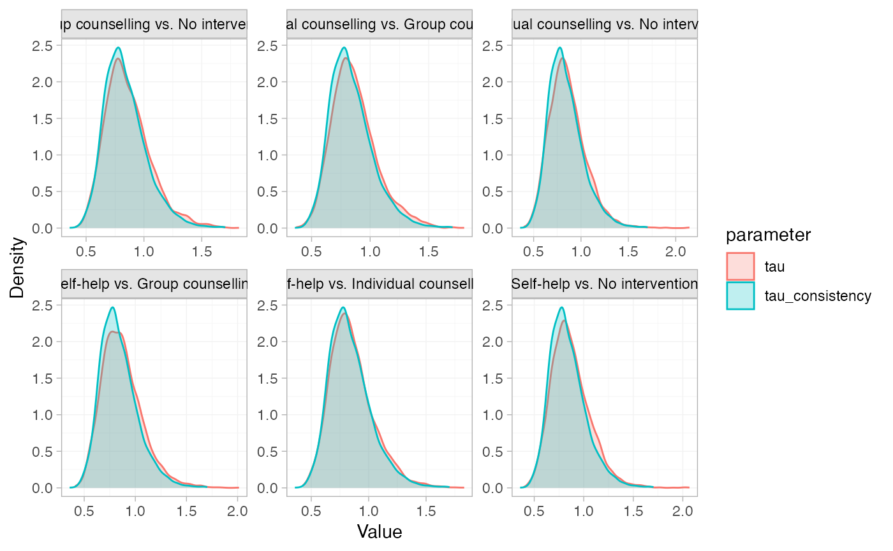
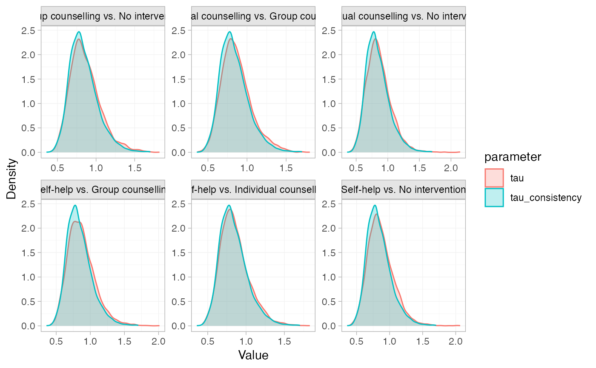

Produce summary plots of node-splitting models
Arguments
- x
A
nodesplit_summaryobject.- ...
Additional arguments passed on to the underlying
ggdistplot stat, see Details.- pars
Character vector specifying the parameters to include in the plot, choices include
"d"for the direct, indirect, and network estimates of relative effects,"omega"for the inconsistency factor, and"tau"for heterogeneity standard deviation in random effects models. Default is"d".- stat
Character string specifying the
ggdistplot stat to use. The default"dens_overlay"is a special case, producing an overlaid density plot.- orientation
Whether the
ggdistgeom is drawn horizontally ("horizontal") or vertically ("vertical"), default"horizontal".- ref_line
Numeric vector of positions for reference lines, by default no reference lines are drawn.
Details
Plotting is handled by ggplot2 and
the stats and geoms provided in the ggdist
package. As a result, the output is very flexible. Any plotting stats
provided by ggdist may be used, via the argument stat. The default
"dens_overlay" is a special exception, which uses
ggplot2::geom_density(), to plot
overlaid densities. Additional arguments in ... are passed to the
ggdist stat, to customise the output.
Alternative stats can be specified to produce different summaries. For
example, specify stat = "[half]eye" to produce (half) eye plots, or stat = "pointinterval" to produce point estimates and credible intervals.
A full list of options and examples is found in the ggdist vignette
vignette("slabinterval", package = "ggdist").
A ggplot object is returned which can be further modified through the
usual ggplot2 functions to add further
aesthetics, geoms, themes, etc.
Examples
# \donttest{
# Run smoking node-splitting example if not already available
if (!exists("smk_fit_RE_nodesplit")) example("example_smk_nodesplit", run.donttest = TRUE)
#>
#> exmp__> # Set up network of smoking cessation data
#> exmp__> head(smoking)
#> studyn trtn trtc r n
#> 1 1 1 No intervention 9 140
#> 2 1 3 Individual counselling 23 140
#> 3 1 4 Group counselling 10 138
#> 4 2 2 Self-help 11 78
#> 5 2 3 Individual counselling 12 85
#> 6 2 4 Group counselling 29 170
#>
#> exmp__> smk_net <- set_agd_arm(smoking,
#> exmp__+ study = studyn,
#> exmp__+ trt = trtc,
#> exmp__+ r = r,
#> exmp__+ n = n,
#> exmp__+ trt_ref = "No intervention")
#>
#> exmp__> # Print details
#> exmp__> smk_net
#> A network with 24 AgD studies (arm-based).
#>
#> ------------------------------------------------------- AgD studies (arm-based) ----
#> Study Treatment arms
#> 1 3: No intervention | Group counselling | Individual counselling
#> 2 3: Group counselling | Individual counselling | Self-help
#> 3 2: No intervention | Individual counselling
#> 4 2: No intervention | Individual counselling
#> 5 2: No intervention | Individual counselling
#> 6 2: No intervention | Individual counselling
#> 7 2: No intervention | Individual counselling
#> 8 2: No intervention | Individual counselling
#> 9 2: No intervention | Individual counselling
#> 10 2: No intervention | Self-help
#> ... plus 14 more studies
#>
#> Outcome type: count
#> ------------------------------------------------------------------------------------
#> Total number of treatments: 4
#> Total number of studies: 24
#> Reference treatment is: No intervention
#> Network is connected
#>
#> exmp__> ## No test:
#> exmp__> # Fitting all possible node-splitting models
#> exmp__> smk_fit_RE_nodesplit <- nma(smk_net, ## Don't show:
#> exmp__+ refresh = if (interactive()) 200 else 0,
#> exmp__+ ## End(Don't show)
#> exmp__+ consistency = "nodesplit",
#> exmp__+ trt_effects = "random",
#> exmp__+ prior_intercept = normal(scale = 100),
#> exmp__+ prior_trt = normal(scale = 100),
#> exmp__+ prior_het = normal(scale = 5))
#> Fitting model 1 of 7, node-split: Group counselling vs. No intervention
#> Fitting model 2 of 7, node-split: Individual counselling vs. No intervention
#> Fitting model 3 of 7, node-split: Self-help vs. No intervention
#> Fitting model 4 of 7, node-split: Individual counselling vs. Group counselling
#> Fitting model 5 of 7, node-split: Self-help vs. Group counselling
#> Fitting model 6 of 7, node-split: Self-help vs. Individual counselling
#> Fitting model 7 of 7, consistency model
#>
#> exmp__> ## End(No test)
#> exmp__>
#> exmp__> ## Don't show:
#> exmp__> if (requireNamespace("pkgdown", quietly = TRUE) && pkgdown::in_pkgdown()) {
#> exmp__+ assign("smk_net", smk_net, .GlobalEnv)
#> exmp__+ assign("smk_fit_RE_nodesplit", smk_fit_RE_nodesplit, .GlobalEnv)
#> exmp__+ }
#>
#> exmp__> ## End(Don't show)
#> exmp__>
#> exmp__>
#> exmp__>
# }
# \donttest{
# Summarise the node-splitting results
(smk_nodesplit_summary <- summary(smk_fit_RE_nodesplit))
#> Node-splitting models fitted for 6 comparisons.
#>
#> ------------------------------ Node-split Group counselling vs. No intervention ----
#>
#> mean sd 2.5% 25% 50% 75% 97.5% Bulk_ESS Tail_ESS Rhat
#> d_net 1.11 0.44 0.30 0.82 1.10 1.38 2.00 2000 2306 1
#> d_dir 1.08 0.74 -0.31 0.58 1.05 1.55 2.58 3392 2712 1
#> d_ind 1.12 0.55 0.07 0.77 1.12 1.48 2.17 1637 2163 1
#> omega -0.05 0.90 -1.79 -0.65 -0.07 0.53 1.83 2205 2310 1
#> tau 0.87 0.20 0.55 0.73 0.85 0.99 1.34 1171 1658 1
#> tau_consistency 0.84 0.19 0.55 0.71 0.82 0.95 1.29 1314 1713 1
#>
#> Residual deviance: 53.6 (on 50 data points)
#> pD: 43.8
#> DIC: 97.4
#>
#> Bayesian p-value: 0.94
#>
#> ------------------------- Node-split Individual counselling vs. No intervention ----
#>
#> mean sd 2.5% 25% 50% 75% 97.5% Bulk_ESS Tail_ESS Rhat
#> d_net 0.84 0.24 0.38 0.69 0.84 1.00 1.32 1237 1718 1
#> d_dir 0.88 0.26 0.39 0.70 0.87 1.04 1.40 1371 1797 1
#> d_ind 0.56 0.69 -0.78 0.09 0.55 0.99 1.95 1345 1649 1
#> omega 0.31 0.71 -1.09 -0.14 0.33 0.78 1.74 1411 1773 1
#> tau 0.87 0.20 0.55 0.72 0.84 0.98 1.33 1143 2092 1
#> tau_consistency 0.84 0.19 0.55 0.71 0.82 0.95 1.29 1314 1713 1
#>
#> Residual deviance: 54.1 (on 50 data points)
#> pD: 44.3
#> DIC: 98.4
#>
#> Bayesian p-value: 0.64
#>
#> -------------------------------------- Node-split Self-help vs. No intervention ----
#>
#> mean sd 2.5% 25% 50% 75% 97.5% Bulk_ESS Tail_ESS Rhat
#> d_net 0.51 0.40 -0.26 0.25 0.50 0.75 1.30 2087 2276 1.00
#> d_dir 0.33 0.54 -0.76 -0.01 0.32 0.66 1.43 3295 2569 1.00
#> d_ind 0.71 0.62 -0.52 0.30 0.72 1.12 1.94 2329 2835 1.00
#> omega -0.38 0.82 -1.94 -0.92 -0.39 0.15 1.27 2479 2626 1.00
#> tau 0.88 0.20 0.57 0.74 0.85 0.99 1.33 1114 1538 1.01
#> tau_consistency 0.84 0.19 0.55 0.71 0.82 0.95 1.29 1314 1713 1.00
#>
#> Residual deviance: 53.7 (on 50 data points)
#> pD: 44.2
#> DIC: 98
#>
#> Bayesian p-value: 0.62
#>
#> ----------------------- Node-split Individual counselling vs. Group counselling ----
#>
#> mean sd 2.5% 25% 50% 75% 97.5% Bulk_ESS Tail_ESS Rhat
#> d_net -0.26 0.41 -1.09 -0.53 -0.26 0.01 0.54 2760 2738 1
#> d_dir -0.10 0.50 -1.09 -0.44 -0.10 0.23 0.87 3180 3177 1
#> d_ind -0.55 0.61 -1.78 -0.95 -0.55 -0.15 0.64 1707 2182 1
#> omega 0.45 0.68 -0.89 0.00 0.45 0.89 1.80 1631 1984 1
#> tau 0.87 0.20 0.57 0.73 0.84 0.98 1.33 1275 1693 1
#> tau_consistency 0.84 0.19 0.55 0.71 0.82 0.95 1.29 1314 1713 1
#>
#> Residual deviance: 53.4 (on 50 data points)
#> pD: 43.9
#> DIC: 97.3
#>
#> Bayesian p-value: 0.5
#>
#> ------------------------------------ Node-split Self-help vs. Group counselling ----
#>
#> mean sd 2.5% 25% 50% 75% 97.5% Bulk_ESS Tail_ESS Rhat
#> d_net -0.60 0.48 -1.57 -0.90 -0.60 -0.28 0.30 2989 2245 1
#> d_dir -0.60 0.65 -1.90 -1.02 -0.60 -0.18 0.72 3690 3112 1
#> d_ind -0.63 0.66 -1.92 -1.07 -0.64 -0.20 0.67 1966 2537 1
#> omega 0.02 0.87 -1.66 -0.54 0.02 0.58 1.72 1983 1936 1
#> tau 0.87 0.20 0.56 0.73 0.84 0.98 1.32 1077 1882 1
#> tau_consistency 0.84 0.19 0.55 0.71 0.82 0.95 1.29 1314 1713 1
#>
#> Residual deviance: 54.1 (on 50 data points)
#> pD: 44.3
#> DIC: 98.5
#>
#> Bayesian p-value: 0.97
#>
#> ------------------------------- Node-split Self-help vs. Individual counselling ----
#>
#> mean sd 2.5% 25% 50% 75% 97.5% Bulk_ESS Tail_ESS Rhat
#> d_net -0.34 0.40 -1.11 -0.60 -0.33 -0.08 0.48 2355 2418 1
#> d_dir 0.05 0.64 -1.24 -0.37 0.05 0.46 1.33 3370 2887 1
#> d_ind -0.64 0.53 -1.70 -0.98 -0.63 -0.29 0.37 1939 2329 1
#> omega 0.70 0.81 -0.83 0.15 0.68 1.21 2.33 2371 2334 1
#> tau 0.86 0.20 0.56 0.72 0.83 0.96 1.33 1182 1691 1
#> tau_consistency 0.84 0.19 0.55 0.71 0.82 0.95 1.29 1314 1713 1
#>
#> Residual deviance: 53.6 (on 50 data points)
#> pD: 44
#> DIC: 97.6
#>
#> Bayesian p-value: 0.38
# Plot the node-splitting results
plot(smk_nodesplit_summary)
 # Plot the inconsistency factors instead, change the plot stat to half-eye,
# and add a reference line at 0
plot(smk_nodesplit_summary, pars = "omega", stat = "halfeye", ref_line = 0)
# Plot the inconsistency factors instead, change the plot stat to half-eye,
# and add a reference line at 0
plot(smk_nodesplit_summary, pars = "omega", stat = "halfeye", ref_line = 0)
 # Plot a comparison of the heterogeneity under the node-split models vs.
# the consistency model
plot(smk_nodesplit_summary, pars = "tau")

# }
# Plot a comparison of the heterogeneity under the node-split models vs.
# the consistency model
plot(smk_nodesplit_summary, pars = "tau")

# }